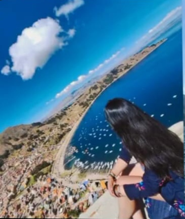
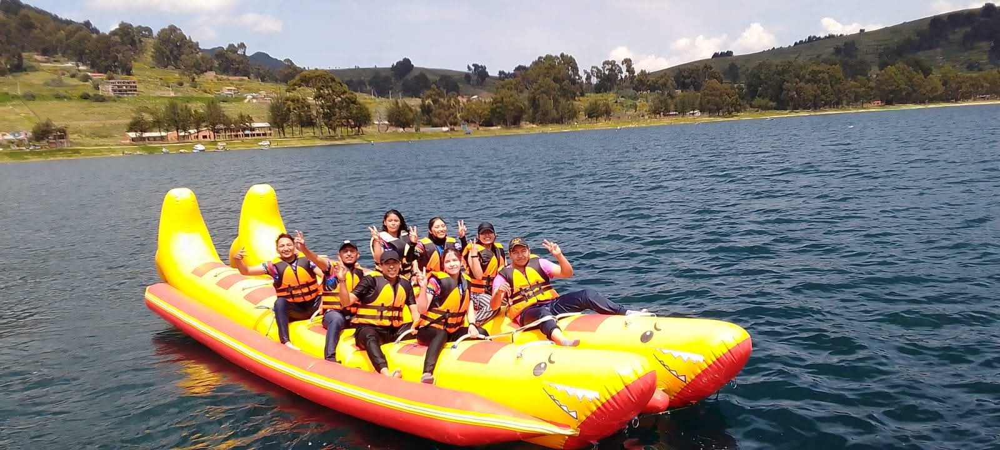

🖼️ Galería




🌊 Descubre Copacabana y el Lago Titicaca 🌊
A orillas del majestuoso Lago Titicaca, Copacabana te espera
con paisajes andinos únicos, tradiciones ancestrales y la
espiritualidad viva de su famosa Basílica. Es la puerta de
entrada a la mítica Isla del Sol y un lugar donde cultura
y naturaleza se unen para regalarte una experiencia inolvidable.
Copacabana es uno de los destinos más emblemáticos de Bolivia, ubicado a orillas del majestuoso Lago Titicaca. Es ideal para paseos en bote, caminatas panorámicas y momentos de relajación.
Es hogar de la famosa Virgen de Copacabana, patrona de Bolivia. Además, desde aquí se puede visitar la Isla del Sol, considerada cuna de la civilización inca.
Copacabana, a orillas del Lago Titicaca, fue un centro sagrado para los pueblos originarios y los incas, quienes veneraban la cercana Isla del Sol. Con la llegada de los españoles, se fundó en 1583 la Basílica de Nuestra Señora de Copacabana, que convirtió al lugar en destino de peregrinación. Su mezcla de tradiciones indígenas y cristianas sigue viva hasta hoy, y su nombre incluso inspiró la famosa playa brasileña de Copacabana.

